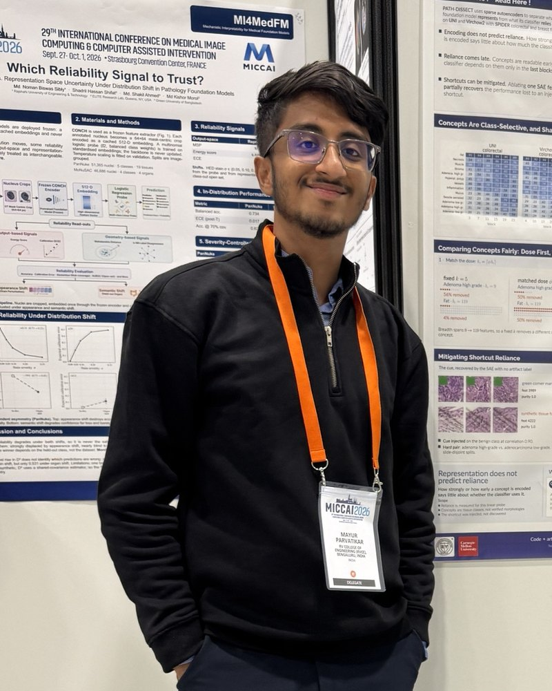

Mechanistic interpretability
Recovering human-meaningful concepts with sparse autoencoders, then testing which of them a downstream classifier causally relies on rather than merely encodes.
Applying to PhD programs · Fall 2027
Associate Platform Engineer, SAP Labs Bengaluru · ML researcher in interpretability & alignment
I work on what language and vision models represent internally, and whether those representations actually drive their behaviour. That has taken me from sparse autoencoders in pathology foundation models, to hot-swappable alignment adapters at decode time, to showing that constrained decoding can reverse which inputs look uncertain. By day I build cloud-native data-privacy services at SAP Labs.

01 News
Sole-author paper Constrained Decoding Can Reverse Which Inputs Look Uncertain accepted at UncertaiNLP @ EMNLP 2026.
PATH-DISSECT accepted as a first-author paper at the MI4MedFM workshop, MICCAI 2026, Strasbourg — overview here.
Swiss-Knife, decode-time multi-objective alignment with hot-swappable DPO-LoRA adapters, is on arXiv and submitted to AAAI 2027.
MENTIS, measuring latent torsion under alignment, is on arXiv and submitted to AAAI 2027.
Started as a research collaborator with the Xu Lab, Carnegie Mellon University.
Joined SAP Labs full-time as Associate Platform Engineer, Data Privacy Engineering.
02 Research focus
What is inside the model, what does it actually use, and when should we trust what it tells us about its own confidence?
Recovering human-meaningful concepts with sparse autoencoders, then testing which of them a downstream classifier causally relies on rather than merely encodes.
Steering a frozen model with hot-swappable helpful, honest and harmless DPO-LoRA adapters at decode time, and measuring what alignment actually changes in its internal geometry.
When confidence signals mislead: grammar-constrained decoding can flip the uncertainty ranking of inputs while post-mask entropy still looks normal, so confidence monitors get no warning.
03 Timeline
Most recent first. Filter by the kind of work.
M. Parvatikar · sole author · independent research
Pragya Lab, BITS Pilani – Goa Campus · A. Karmakar, M. Parvatikar, et al.
Pragya Lab, BITS Pilani – Goa Campus · P. P. Saha, S. Raina, M. Parvatikar, et al.
Agentic LLM systems
Research Collaborator, Xu Lab, Carnegie Mellon University · with Dr. Xingjian Li & Prof. Min Xu
SAP Labs India, Bengaluru · Data Privacy Engineering
SAP Labs India, Bengaluru
SPIRE Lab, Indian Institute of Science (IISc), Bengaluru
Undergraduate Researcher, R. V. College of Engineering · M. Parvatikar, M. Mukunda, J. Chikkarangaiah, Mamatha G. S., G. Shobha · IEEE RAAI 2025
Samsung R&D Institute India – Bangalore
M. G. Parvatikar, S. Rao, P. M. Jayanth Rao, B. M. Sagar · ICCCNT 2024, IIT Mandi
Samsung R&D Institute India – Bangalore
R. V. College of Engineering, Bengaluru · CGPA 9.28 / 10
04 Publications
UncertaiNLP Workshop, EMNLP 2026
MI4MedFM Workshop, MICCAI 2026, Strasbourg
I am always happy to discuss interpretability, alignment, uncertainty, or graduate research opportunities.